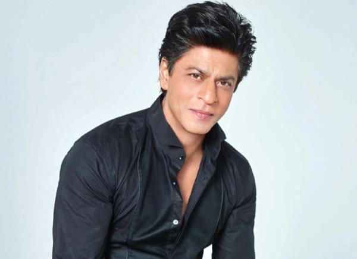
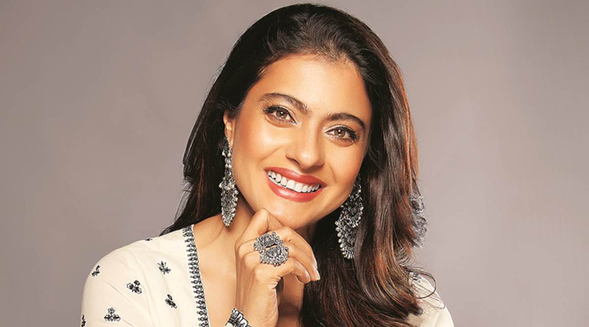
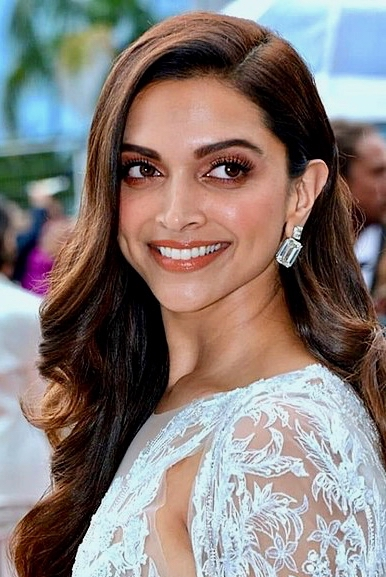
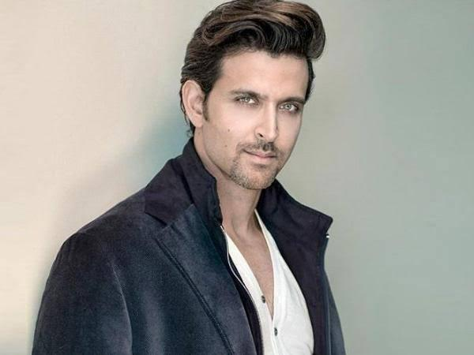
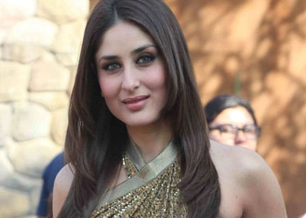
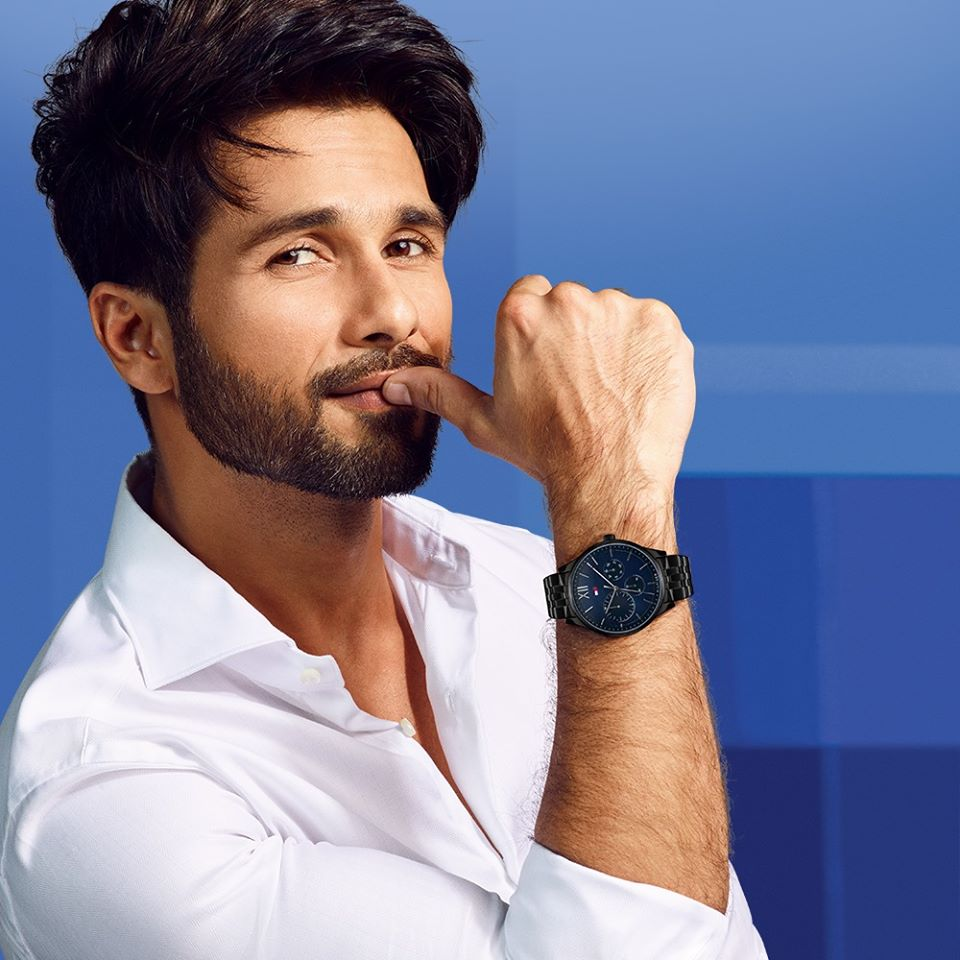

|
Shahrukh Khan was born on 2nd November 1965 in New Delhi,India.He is the son on Taj Mohammad Khan and Fatima Khan and brother of Shehnaz Lalarukh Khan.He did his debut film Deewana (1992) opposite Divya Bharti and Rishi Kapoor.He has done films like Dilwale Dulhania Le Jayenge, Kuch Kuch Hota Hai, Kabhi Khushi Kabhi Gham,My Name is Khan etc. He got married to Gauri Chibber Khan in 1991. He became a father to a baby boy "ARYAN" in 1997, to a baby girl "SUHANA" in 2000 and to a baby boy"ABRAM" in 2013.  |
Kajol Mukherjee Devgan was born on 5th August 1974 in Mumbai,Maharashtra.She is the daughter of Shomu Mukherjee and Tanuja Samarth and older sister of Tanisha Mukherjee. She did her debut film Bekhudi (1992) opposite Kamal Sadanah. She has done films like Tanhaji, Dilwale Dulhania Le Jayenge, Kuch Kuch Hota Hai, Kabhi Khushi Kabhi Gham,My Name is Khan etc.She got married to actor Ajay Devgan in 1999. She became a mother to a baby girl "NYSA" in 2003 and a baby boy "YUG" in 2010.  |
Deepika Padukone was born on 5th January 1986 in Copanhegan, Denmark. She is the daughter of Badminton Champion Prakash Padukone and Ujjala Padukone and older sister of Golf Champion Anisha Padukone.She did her debut film Om Shanti Om (2008) opposite Shahrukh Khan. She has done super films like Yeh Jawaani Hai Deewani, Chennai Express, Cocktail,Padmavat etc. She got married to Ranveer Singh Bhavnani in 2018.  |
Hrithik Roshan was born on 10th January 1974 in Mumbai,Maharashtra. He is the son of Rakesh Roshan and Pinky Roshan and younger brother of Sunaina Roshan. He did his debut film Kaho Na...Pyar Hai(2000) opposite Ameesha Patel. He has done films like Zindagi Na Milegi Dobara, Dhoom 2,Kabhi Khushi Kabhi Gham, War etc. He got married to Suzzane Khan in 2000. He became a father to a baby boy "HREHAAN" in 2006 and to "HRIDAAN" in 2008.  |
Kareena Kapoor Khan was Born on 21st September 1980 in Mumbai, Maharashtra. She is the daughter of actors Randhir Kapoor and Babita Shivasdani, niece of Rima Jain and Rajiv Kapoor, Cousin of Ranbir Kapoor, Riddhima Kapoor Sahni , Nikhil Nanda, Nitasha Nanda, Armaan Jain, Aadar Jain and younger sister of Karishma Kapoor (lolo). She did her debut film Refugee (2000) opposite Abhishek Bachchan. She has done films like Kabhi Khushi Kabhi Gham, Jab We Met, Veere Di Wedding etc. She got married to Saif Ali Khan in 2012. She became a mother to a baby boy “TAIMUR” in 2012.  |
Shahid Kapoor was born on 25th February 1981 in Mumbai, Maharashtra. He is the son of Pankaj Kapoor and Neelima Azeem, stepson of Supriya Pathak, Rajesh Khattar, Ustad Raja Ali Khan and stepbrother of Sanah Kapoor, Ruhaan Kapoor and Ishaan Khattar. He did his debut film Ishq Vishk (2003) opposite Amrita Rao and Shehnaz Treasury. He has done films like Jab We Met, Udta Punjab, Ishq Vishk etc. He married Mira Rajput Kapoor in 2015. He became a father to a baby girl “MISHA” in 2016 and baby boy “ZAIN” in 2018.  |